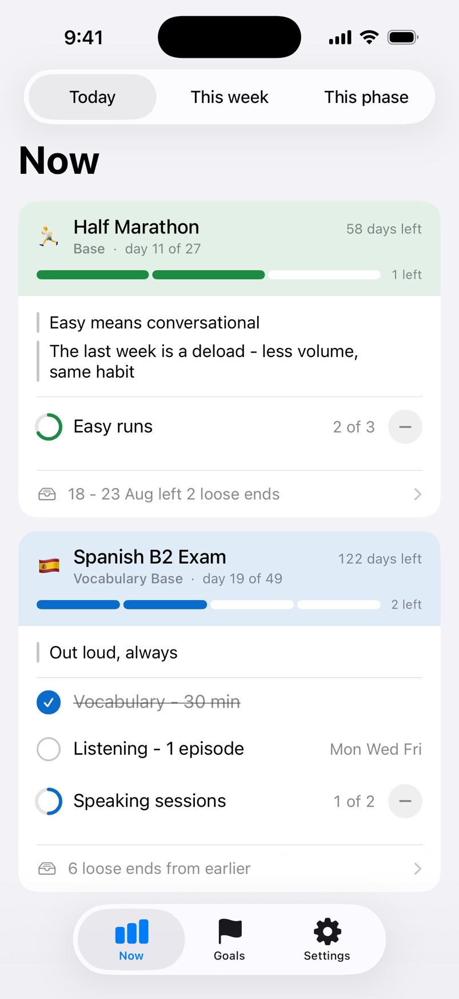

Turn a deadline into a daily plan.
A goal that is months away is hard to act on today. Phased breaks it into phases and shows you exactly what today is for - across every goal you are running.

Phases, not one long list
A three-month goal is overwhelming. Three one-month phases are not. Phased shows the phase you are in and keeps the rest out of the way until its time comes.
Today, this week, this phase
Three zoom levels over the same plan. Check today each morning, look over the week when you plan, and pull back to the whole phase when you need the bigger picture.
Messages to your future self
Attach a note to any date - race day, the week before the exam - and it arrives as a notification right on time, written by the one person who knows what you will need to hear.
Private by design
No account. No ads. No tracking. Your plan is stored on your device and synced through your own iCloud - we could not read it if we wanted to.